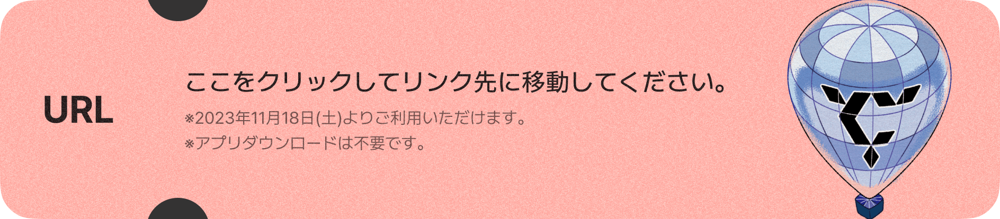
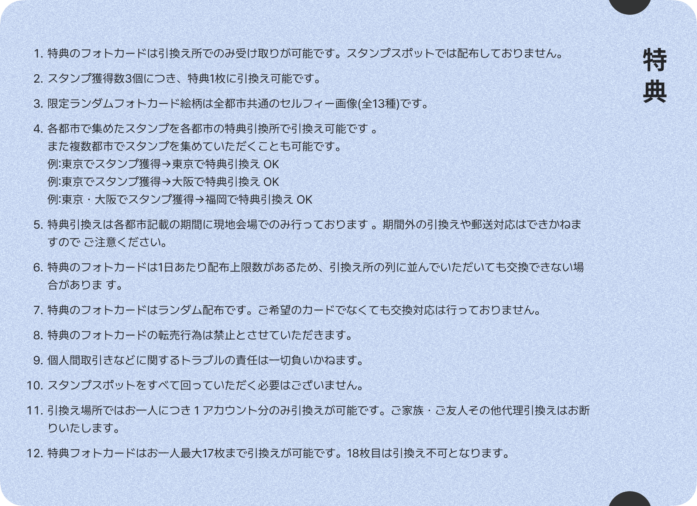
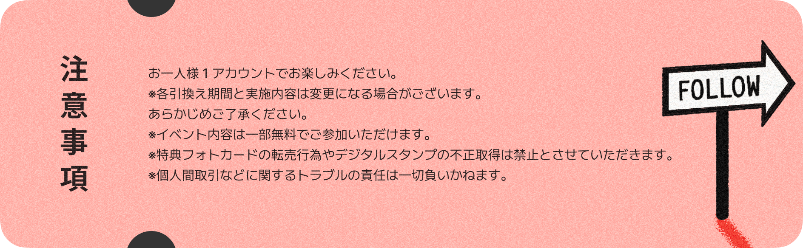

The city info
The city infoSEVENTEENが 「SEVENTEEN TOUR 'FOLLOW' TO JAPAN」
に合わせ、公演開催5都市の各所とコラボレーション。
各都市で、楽しい思い出を一緒に。#SEVENTEENと行こう #SVT_FOLLOW_THECITY SEVENTEEN
'FOLLOW' THE CITY RALLY
「SEVENTEEN TOUR 'FOLLOW' TO JAPAN」にあわせて東京・埼玉・愛知・大阪・福岡で開催される 「SEVENTEEN 'FOLLOW' THE CITY」をより楽しんでいただくために、開催5都市でデジタルスタンプラリーを開催！ コンサートチケットをお持ちの方もそうでない方も、楽しんでいただけます。
 獲 得 期 間
獲 得 期 間ス タ ン プ
2023年11月18日(土)～12月18日(月)
※各都市・各プログラムによってスタンプ設置期間は異なります。  URL
URLは11月中旬公開予定
※アプリダウンロードは不要です。
 獲 得 方 法
獲 得 方 法ス タ ン プ
東京・埼玉・愛知・大阪・福岡の各プログラム開催場所内に設置されたスポットを巡りながらデジタルスタンプを集めることができます。
各スポットでQRコード読込み、またはGPS機能によりメンバー画像のスタンプを集めていただけます。
スタンプは1か所につきお一人様1回まで取得（読込み）いただけます。スタンプは各スポット以下に記載の期間にでのみ行っております。
期間外のご来場では獲得できません。  特 典
スタンプ獲得数により各都市の特典引換え所で限定ランダムフォトカードの特典に引換えることが可能です。
スタンプ獲得数3個につき、特典1枚に引換え可能です。
特典のフォトカードの交換は行っておりません。
限定ランダムフォトカード絵柄は全都市共通のセルフィー画像（全13種）です。
各都市で集めたスタンプを各都市の特典引換所で引換え可能です。
また複数都市でスタンプを集めていただくことも可能です。- 例：東京でスタンプ獲得→東京で特典引換え OK- 例：東京でスタンプ獲得→大阪で特典引換え OK- 例：東京・大阪でスタンプ獲得→福岡で特典引換え OK
特典引換えは各都市以下に記載の期間に現地会場でのみ行っております。
期間外の引換えや郵送対応はできかねますのでご注意ください。
スタンプスポットをすべて回っていただく必要はございません。
特典は1日あたり配布上限がありますのでご注意ください。  注 意 事 項
※各引換え期間と実施内容は変更になる場合がございます。
あらかじめご了承ください。
※イベント内容は一部無料でご参加いただけます。※特典フォトカードの転売行為やデジタルスタンプの不正取得は禁止とさせていただきます。
※個人間取引などに関するトラブルの責任は一切負いかねます。
THE CITY RALLY SCHEDULE
TOKYO/SAITAMA
特典引換所
特典引換所
11.22 WED - 11.26 SUN ※ 埼玉県内にはデジタルスタンプスポットはありますが、特典引換え場所はありません。
AICHI
特典引換所
特典引換所
11.29 WED - 12.4 MON
OSAKA
特典引換所
特典引換所
12.6 WED - 12.11 MON
FUKUOKA
特典引換所
特典引換所
12.15 FRI - 12.18 MON